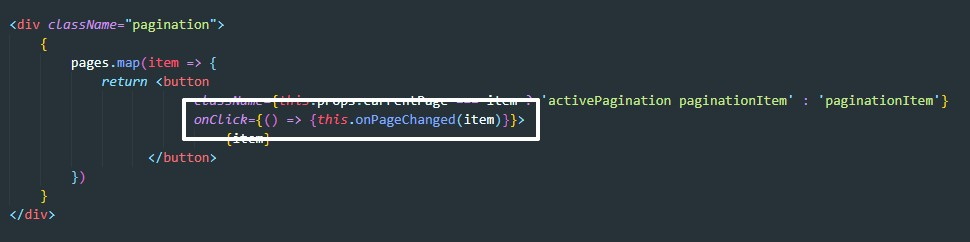
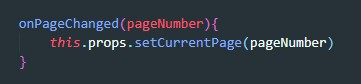

Данные с сервера должны приходить порциями, так как данных в базе может быть на несколько терабайт и вывести их все разом на страницу чревато падением канала связи и сервера.
На серверной части данные делятся на портции, эти порции называются - page (страница). Мы делаешь HTTP запрос и получаем за раз только одну page
Примерно это выглядит так:
После этого если нам понадобится вторая порция, мы делаем второй запрос:
Напомню, GET запрос отправляет на сервер только URL, поэтому в этом URL мы и зашиваем нужный номер страницы. Т.е. мы в конце URL добавляем значк вопроса ( ? ) и далее указываем ключ = значение (в примере ключ - это pageNumber - номер страницы, значение 2. т.е. запросили данные второй страницы).
Кто определяет как называется ключ? Название ключа определяет бэкендер, более того в технической документации проекта должны быть описаны все возможные запросы на сервер и их параметры.
Допустим на сервере данные поделили на страницы (page) в которых хранится по 5 элементов, но нам нужно что бы на фронт приходило только 3. В этом случае сервер должен поддерживать правило гибкого указания размера страниц. Это все так же должно быть описано в технической документации проекта. Вот как будет выглядеть запро сна сервер с указанием количества элементов на странице. (здесь так же ключ = значение, ключи разделены амперсантом ( & ))
Как frontend-разработчик узначет сколько всего у нас страниц (page) доступно? Нам нужно получить количество записей в таблице БД и разделить это количество на количество элементов на странице. Например у нас в базе 100 элементов, на 1 странице мы отображаем 20 элементов, значит у нас 5 страниц. Как получить количество элементов? Так как это всего лишь число, то мы могли бы его получать от сервера вместе с первым запросом. Например, мы делаем GET запрос на сервер, сервер возвращает нам объект, у этого объекта два свойства:
Начнем с reducer. Reduser - это функция которая принимает state и action. В зависимости от типа action reduser изменяет state. Так как данные у нас хранятся на сервере, то изначально reduser получит NULL в качестве state и это вызовет критическую ошибку. Поэтому в reduser мы должны создать state по умолчанию. Как правило это объект с пустым массивом в качестве первого свойства. Этот объект обычно называют инициализирующий state (inicialState)
У этого объекта мы создаем два свойства:
Теперь эти два значения нужно передать классовой компоненте через props, для этого в классовой компоненте мы добавляем свойства объекты который возвращает функцию mapStateToProps
Теперь внутри классовой компоненты мы можем посчитать, сколько кнопок пагинации у нас будет. В методе render перед return объявляем переменную и внее помещаем результат деления totalUsersCount на pageSize. Здесь вот на что нужно обратить внимание. Допустим у нас 10 элементов а на странице мы хотим отображать по 3 штуке. 10/3 получаем 3.3333. но нам нужно получить целое число, так как это число соответствует количеству кнопок пагинации. Поэтому округляем это число в сторону большего значения с помощью Math.ceil()
Теперь что бы отрисовать кнопки пагинации создадим массив, и с помощью цикла for заполним его значениями от 1 до pagesCount
Далее в JSX отмапим (map) наш массив, превратив его в элементы интерфейса

Сейчас если посмотреть на результат на странице, мы ничего не увидим, так как 0 / 5 будет 0 и в pagesCount мы получили нулевое значение. Почему так вышло, потому что в state по умолчанию мы записали что totalUsersCount равно 0. после запроса на сервер мы это значение перезапишем, пока же что бы увидет результат временно в значение по умолчанию totalUsersCount запишем - 25
Теперь определим как мы будем отображать текущий номер страницы, делать это будем добавлением активного класса, т.е. если номер элемента пагинации соответствет номеру текуще страницы, то элементу пагинации будет добавляться класс, которые по стилям будет его выделять. К примеру это будет класс - "activePagination"
Теперь надо в state создать свойство которое будет хранить номер текущей старницы. Это тот номер который мы будем отправлять в GET запросе на сервер что бы получить данные определенной страницы. Возвращаемся в reducer и в state по умолчанию создаем свойство - carrentPage и даем ему значение по умолчанию - 1
После этого идем в контейнерную компоненту и добавляем еще одно свойство объекту которое нам возвращает функция mapStateToProps
Теперь активный класс должен заработать.
После этого нам нужно отредактировать наш AJAX запрос, вот как он выглядит сейчас:
Что нам нужно сделать? нам надо добавить в URL те данные которые мы хотим передать, а именно номер текущей страницы и количество запрашиваемых элементов на странице. В технической документации написано, что за номер страницы отвечает ключ - page, а за соличество элементов на странице отвечает ключ - count. Помещая в эти ключи значения из state наш запрос будет выглядеть вот так: (обращаем внимание на то, что строку URL мы помещаем в обратные кавычки что бы использовать интерполяцию)
Теперь добавим возможность изменения state при клике по элементам пагинации. В reducer создаем новую константу SET_CURRENT_PAGE:
Далее создаем action creator.
Эта функция будет принимать номер элемента пагинации по которуму совершили клик.
Теперь создадим еще один case в условном операторе switch
Переходим в контейнерную компоненту и создаем callback
Здесь мы вызываем dispatch и в качестве аргумента передаем ему результат вызова action creator который в свою очередь получил номер элемента пагинации по которому произойдет клик
Далее создадим обработчик события клика по элементу пагинации, но перед этим мы у классовой компоненты создадим метод который будет вызываться по клику по элементу пагинации.

Этот метод принимает аргумент, в него то мы и будем передавать номер элемента пагинации. вот как будет выглядеть вызов этого метода:
Теперь в методе класса вызовем callback который будет менять state
Теперь при нажатии по элементам пагинации у нас будет присваиваться класс который будет выделять активный элемент пагинации. Но нам еще нужно сделать что бы при клике отправлялся запрос на сервер, при том что каждый раз запрос на сервер будет имет разный номр страницы. Добавим в метод onPageChanged код axios запроса на сервер:
Последний штрих: если сейчас посмотреть на наш state по умолчанию, то там в качестве свойства totalUsersCount стоит фиксированное значение. Но нам туда надо записать реальное значение полученное из сервера. Для этого в первом запросе на сервер мы должны прокинуть в state значение которое нам вернул сервер
Здесь так же создаем callback у контейнерной компоненты, создаем action creator, case у условного оператора и конечно же константу для типа action.